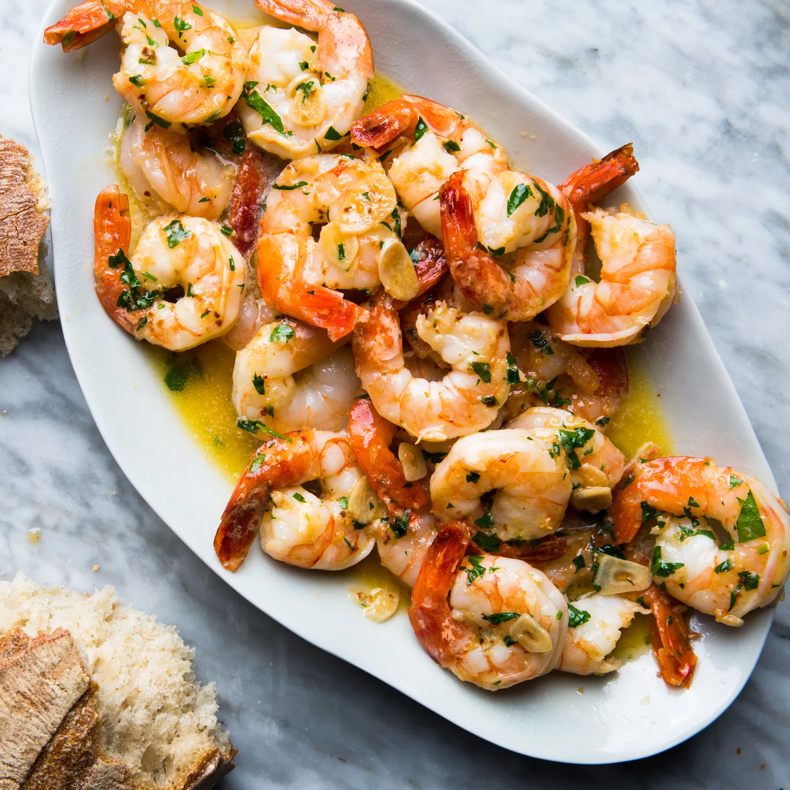

Shrimp Scampi Recipe

Bon Appetit Shrimp Scampi Recipe
Shrimp scampi is an ideal weeknight recipe: It comes together quickly with just a handful of ingredients, many of which you might already have in the house. The key here is, unsurprisingly, good shrimp. Unless you have access to a fishmonger, frozen wild-caught or frozen sustainably farmed shrimp are likely to be fresher than the frozen-then-thawed shrimp sitting on ice at your local supermarket.
Ingredients
- 4 garlic cloves, 2 grated, 2 thinly sliced
- 1 teaspoon kosher salt
- 3 tablespoons olive oil, divided
- 1 pound large shrimp, peeled, deveined
- 1/4 teaspoon red pepper flakes
- 1/4 cup dry white wine
- 1 tablespoon fresh lemon juice
- 1/4 cup (1/2 stick) unsalted butter
- 3 tablespoons chopped parsley
- warm crusty bread (for serving)
Steps
- Whisk grated garlic, salt, and 1 Tbsp. oil in a medium bowl. Add shrimp, toss to coat, and chill, uncovered, at least 30 minutes and up to 1 hour.
- Heat remaining 2 Tbsp. oil in a large skillet over medium and cook shrimp mixture, being careful not to let shrimp or garlic brown, until shrimp is pink but still slightly underdone, about 1 minute per side. Transfer to a plate with a slotted spoon, leaving as much oil in pan as possible. Add sliced garlic and red pepper to skillet and cook, tossing, until fragrant, about 1 minute. Add wine and lemon juice and cook, stirring occasionally, until reduced by half, about 2 minutes. Add butter and cook, stirring and swirling pan occasionally, until butter is melted and sauce is thickened, about 5 minutes more.
- Scrape shrimp along with any accumulated juices into skillet. Toss to coat and cook until shrimp are fully cooked through, about 2 minutes. Transfer to a platter, top with parsley, and serve with bread for dipping alongside.
Home